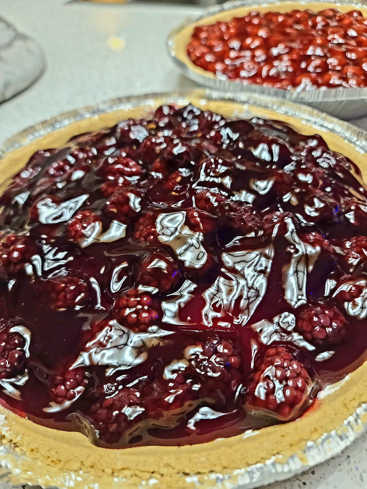
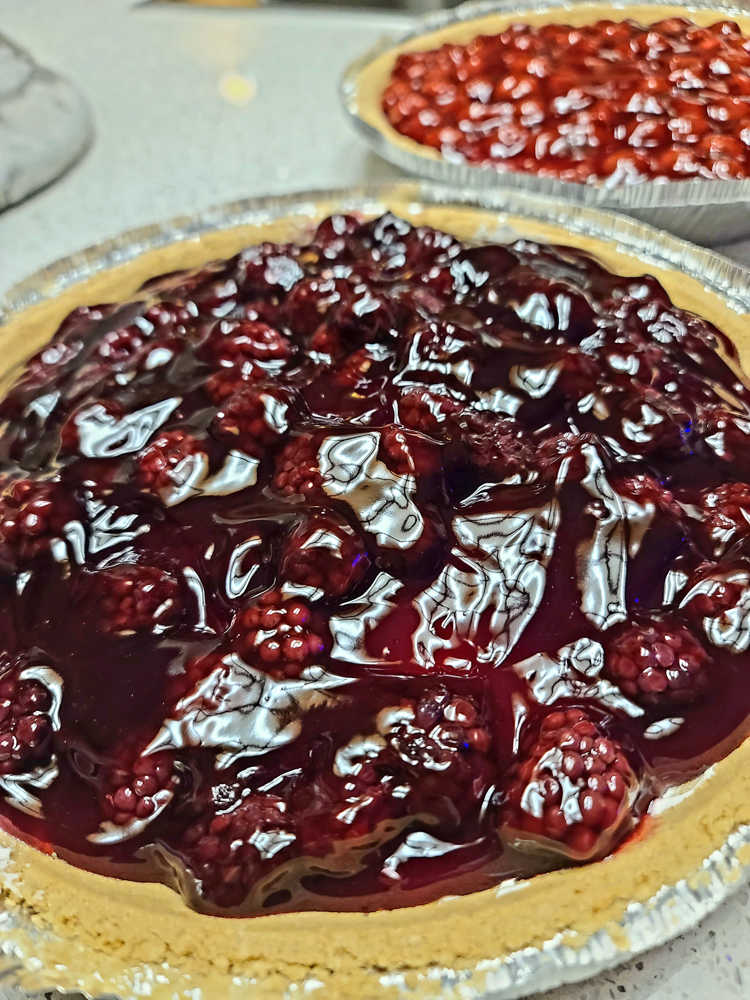
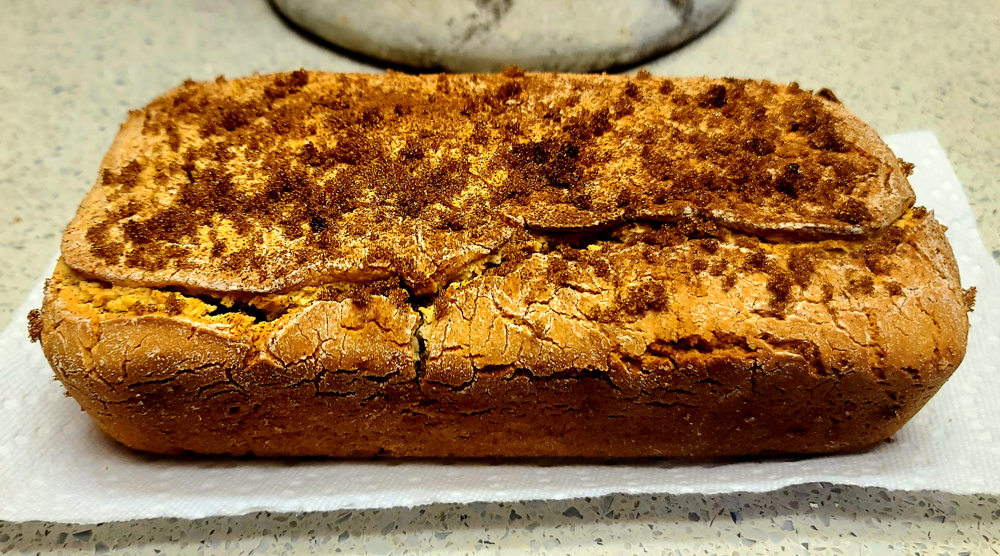
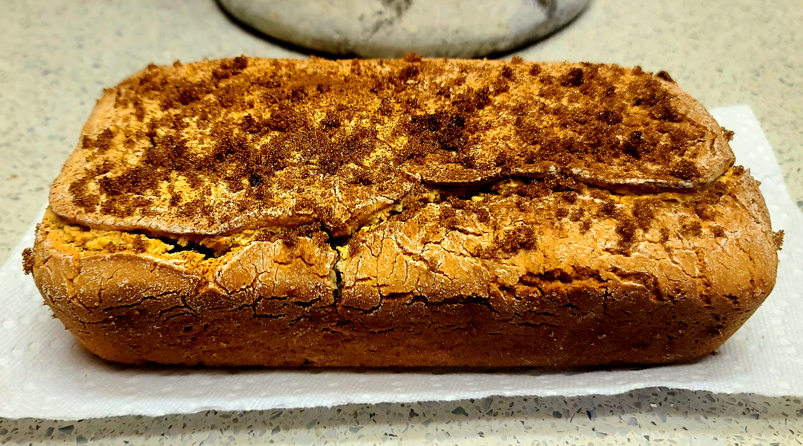

About Me
Hello and welcome to my website! I'm Haven Kotara, a 22 year-old future Computer Science graduate from UTSA. This December I'll be graduating with a Bachelor's and begin my career. While I'm new to the field, I'm excited to expand my knowledge and skills. Computer Science is vast with potential and unexplored possibilities - which is what I adore about this field. I enjoy a variety of creative hobbies and pursuits; programming and other related areas of the field are yet another outlet for me to be innovative and express myself through my work.
University
The Journey Thus Far
I'm pursuing a Bachelor's in Computer Science at the University of Texas at San Antonio. Presently, I'm
in my senior year and expect to graduate this December. During my time at UTSA, I've explored many
areas throughout the Computer Science field. From concepts and theory to hands on programming, I've been
able to dip my toes in most areas of the field. Computer Science is so broad and filled with potential,
it's both exciting and a little overwhelming to decide on a career path. Thanks to the guideance from
my professors and peers, I feel I've made the most of my time at UTSA and developed a clear vision of
my future.
I plan to pursue research opportunities this coming Fall semester with focus on Artificial Intelligence
and exploring its capabilities. Depending on how the research progresses, I may consider pursuing a Master's
degree or continuing research at UTSA after graduation.
| CS4413 Web Technologies | 8:30am - 9:45am | Tuesdays and Thursdays |
| CS4843 Cloud Computing | Online Class | No Set Meeting Days |
| CS4393 User Interfaces | 1:00pm - 2:15pm | Tuesdays and Thursdays |
| CS3793 Artificial Intelligence | 6:00pm - 7:15pm | Tuesdays and Thursdays |
Career
Experience
I began working my first - and current - job at HEB back in March of 2018.
My HEB journey started as a bagger and eventually evolved into cashering. From there I began cross-training
in other departments to help where needed and further my understanding of store operations. In 2020, HEB
launched the Cross Functional department. I was recommended by store management and moved departments in 2020.
During my time in Cross Functional I became experienced with other store departments and was even requested to fill
shifts in both Deli and Pharmacy. Later, in 2022, I was offered a position in Beauty as a Customer Service Representative.
While I enjoyed my time in Cross Functional, my classes had begun to conflict with and complicate my schedule.
I moved to Beauty and have remained in that department to this day.
Each department I've worked in has offered a unique learning experience that has expanded my understanding of store
operations and improved my skills. I'm grateful for the learning opportunities I've had and do my best to apply this
knowledge in Beauty.
Career Plans
Ideally, I would love to move up in HEB to HEB Digital. I've worked for this company for almost 5 years and am looking into corporate opportunities. I hope to land a summer internship with HEB to get my foot in the door and experience what day-to-day worklife might look like - as well as an opportunity to improve my skills. I'm open to other opportunities and am actively looking for positions with focus on software development - though I am open to other areas in the Computer Science field.
Goals
I want to explore Artificial Intelligence and its capabilities for mimicing human brain functionality. There's so much
to be pioneered in A.I., and the prospect of discovering new advancements is exciting! As an example, I think A.I. has a lot
of potential for improving modern medicine. Hypothetically, A.I. could be used to develop treatments or diagnose patients -
which could help a lot of people, especially in emergency situations. Our technology is a ways off from that hypothetical becoming
reality, but I'm optimistic the possibility is there for our future.
This coming Fall semester, I hope to explore Artificial Intelligence through an intependent study. I'm new to A.I., but I'm
passionate about this research and think this is the perfect opportunity to familiarize myself with the subject. Presently, I'm
trying to get a headstart by reading up on the necessary topics and pre-researching so that I can put this knowledge into
practice next semester. I want to make the most of my time during the study by getting ahead now. Depending on how the research
progresses, I may reconsider my future plans and shift my focus to continuing my studies.
Hobbies
Gardening
My gardening hobby is mostly indoors - my room is filled with various plants that are mostly alive.
I'm still new to the hobby and learning as I go, the winter months pose a challenge in figuring out a
new watering schedule. I've tried my hand at a few different plants now and had a variety of luck.
Pothos, some succulents, monstras, micans, sanservias, and alocasias have all done well and survived.
I've unfortunately struggled with carnivorous plants, lilies, orchids, and basically everything else.
Plants can be sensitive and I'm limited to the environment of my room, so some plants are difficult to
keep in those circumstances. In time I'll get the hang of it, I just need to keep throwing money at new
plants and trying new things until they stop dying.
I typically purchase my plants from PlantlyAddicted, a small etsy shop.
Cooking & Baking
Nothing beats fresh, homemade meals and baked goods. When I get the opportunity, I enjoy trying new recipes
and learning different ways to combine ingredients. Following a recipe is simple enough in concept, but I've learned
quickly that things tend to be more difficult in practice. Custards are a big example of this - they're as big of a pain
to make as they are delicious. One batch doesn't cook enough in the middle, another will cook too much and burn, there's no
winning.
Another, less complicated, favorite dish of mine is spaghetti! Super easy to make with fresh ingredients without requiring
a lot of effort. The fresh ingredients really make a difference in comparison to canned options. Taking an extra few minutes to
cut tomatos, onion, and basil is worth the resulting flavor.
Gaming
I think my gaming niche is fantasy, creative games where I can immerse myself in the virtual world. It offers me an escape from the real world into an imaginative reality of my own making. It almost feels like a level up from the experience of reading a good book. My imagination can be brought to life in a way I can see and interract with. It's really realaxing for me and offers a good long-distance activity to do with friends. Presently, my go-to games are:
- Final Fantasy XIV
- Genshin Impact
- Phasmophobia
- Witch It
Music
I dabble with singing, digital music programs, and playing the ukelele. None of which I'm a pro at, but
that doesn't make the hobbies any less fun. When I'm feeling inspired, I'll make up some tunes or attempt
a song cover.
My musical interests are more of a "as the feeling hits me" - which is why I don't dedicate as
much time to it as I do for my other hobbies - with the exception of singing. I'm taking vocal lessons with
a local coach in between classes. This makes my schedule a bit tight, but I enjoy having dedicated time for
practicing a skill.
Embroidery
Presently, I'm working on some embroidery kits to practice the different stitches and techniques before attempting my own designs. In the future, I'd like to embroider custom tote bags and jeans. Embroidery has been easy for me thus far, as well as relaxing. I enjoy working on a kit while watching shows. The only downside is how long it takes to complete a design, but it doesn't bother me too much. The end result is worth the combined effort.
Digital Art
Most of my drawing is digital art using Clip Studio Paint. I'm not a pro by any means, but I typically
can make things look like the things they're supposed to be. Lately I've been practicing sketching from
life - specifically focusing on humans. People are hard to draw, bodies are weird when detailing; but I'm
slowly getting the hang of it. I often use photos of my friends as references when sketching. I think I put
more love and detail into art that I feel passionate about or connected to. Drawing my loved ones gives me
the same feeling and motivation. In time I'll be able to draw without needing to heavily reference photos,
but for now my crutch is helping me improve my skills.
Check out the Gallery to see some of my work!
Gallery
 



 

Want to see previous versions of this site?
Assignment 1Assignment 2
Assignment 3